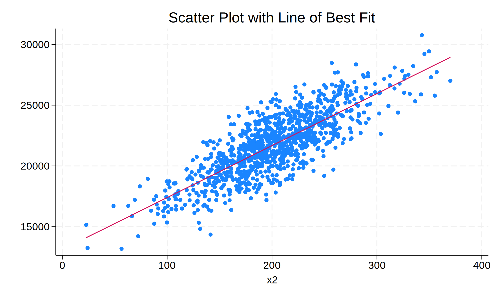
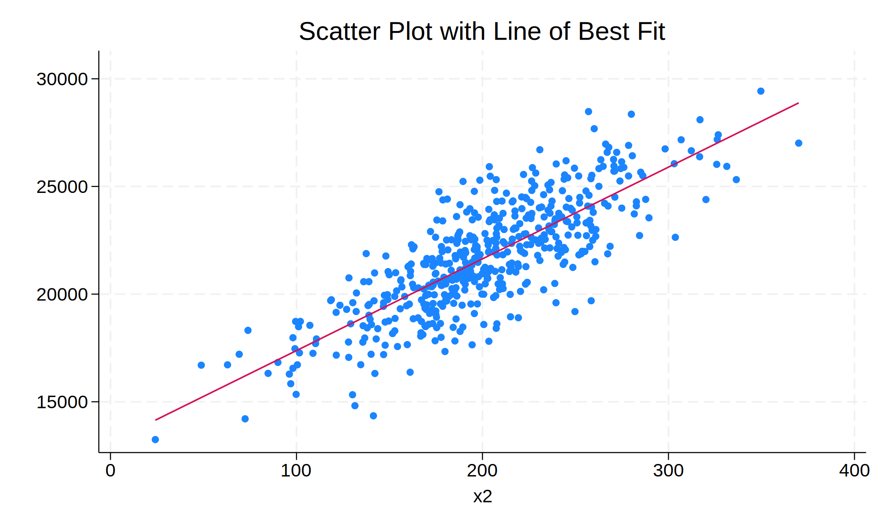
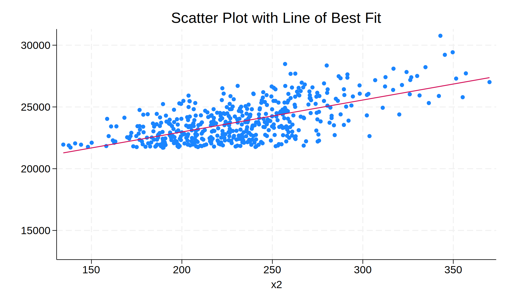
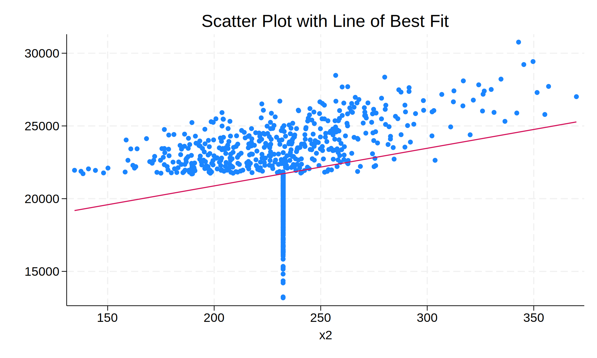

Before any analysis. Both the R kernal and Stata kernal need to be properly setup. First start with R. We first need to install the correct Python to R package using pip.
pip install rpy2
Requirement already satisfied: rpy2 in /opt/anaconda3/lib/python3.12/site-packages (3.5.17)
Requirement already satisfied: cffi>=1.15.1 in /opt/anaconda3/lib/python3.12/site-packages (from rpy2) (1.17.1)
Requirement already satisfied: jinja2 in /opt/anaconda3/lib/python3.12/site-packages (from rpy2) (3.1.4)
Requirement already satisfied: tzlocal in /opt/anaconda3/lib/python3.12/site-packages (from rpy2) (5.3.1)
Requirement already satisfied: pycparser in /opt/anaconda3/lib/python3.12/site-packages (from cffi>=1.15.1->rpy2) (2.21)
Requirement already satisfied: MarkupSafe>=2.0 in /opt/anaconda3/lib/python3.12/site-packages (from jinja2->rpy2) (2.1.3)
Note: you may need to restart the kernel to use updated packages.
After we have done this we then need to setup R within the Python kernal
%load_ext rpy2.ipython
Finally a quick little test to make sure R now works. Anytime we want R code to run we have to use the magic cells %%R.
%%Rx <- c(1,2,3,4,5)mean(x)
[1] 3
Now we have to install the python to stata dependecies to get Stata to work in a Python kernal. We start by installing the pystata package.
pip install pystata
Requirement already satisfied: pystata in /opt/anaconda3/lib/python3.12/site-packages (0.0.1)
Requirement already satisfied: pandas in /opt/anaconda3/lib/python3.12/site-packages (from pystata) (2.2.2)
Requirement already satisfied: numpy>=1.26.0 in /opt/anaconda3/lib/python3.12/site-packages (from pandas->pystata) (1.26.4)
Requirement already satisfied: python-dateutil>=2.8.2 in /opt/anaconda3/lib/python3.12/site-packages (from pandas->pystata) (2.9.0.post0)
Requirement already satisfied: pytz>=2020.1 in /opt/anaconda3/lib/python3.12/site-packages (from pandas->pystata) (2024.1)
Requirement already satisfied: tzdata>=2022.7 in /opt/anaconda3/lib/python3.12/site-packages (from pandas->pystata) (2023.3)
Requirement already satisfied: six>=1.5 in /opt/anaconda3/lib/python3.12/site-packages (from python-dateutil>=2.8.2->pandas->pystata) (1.16.0)
Note: you may need to restart the kernel to use updated packages.
We then also install the stata_setup package.
pip install --upgrade --user stata_setup
Requirement already satisfied: stata_setup in /Users/scottoatley/.local/lib/python3.12/site-packages (0.1.3)
Requirement already satisfied: numpy in /opt/anaconda3/lib/python3.12/site-packages (from stata_setup) (1.26.4)
Requirement already satisfied: pandas in /opt/anaconda3/lib/python3.12/site-packages (from stata_setup) (2.2.2)
Requirement already satisfied: ipython in /opt/anaconda3/lib/python3.12/site-packages (from stata_setup) (8.27.0)
Requirement already satisfied: decorator in /opt/anaconda3/lib/python3.12/site-packages (from ipython->stata_setup) (5.1.1)
Requirement already satisfied: jedi>=0.16 in /opt/anaconda3/lib/python3.12/site-packages (from ipython->stata_setup) (0.19.1)
Requirement already satisfied: matplotlib-inline in /opt/anaconda3/lib/python3.12/site-packages (from ipython->stata_setup) (0.1.6)
Requirement already satisfied: prompt-toolkit<3.1.0,>=3.0.41 in /opt/anaconda3/lib/python3.12/site-packages (from ipython->stata_setup) (3.0.43)
Requirement already satisfied: pygments>=2.4.0 in /opt/anaconda3/lib/python3.12/site-packages (from ipython->stata_setup) (2.15.1)
Requirement already satisfied: stack-data in /opt/anaconda3/lib/python3.12/site-packages (from ipython->stata_setup) (0.2.0)
Requirement already satisfied: traitlets>=5.13.0 in /opt/anaconda3/lib/python3.12/site-packages (from ipython->stata_setup) (5.14.3)
Requirement already satisfied: pexpect>4.3 in /opt/anaconda3/lib/python3.12/site-packages (from ipython->stata_setup) (4.8.0)
Requirement already satisfied: python-dateutil>=2.8.2 in /opt/anaconda3/lib/python3.12/site-packages (from pandas->stata_setup) (2.9.0.post0)
Requirement already satisfied: pytz>=2020.1 in /opt/anaconda3/lib/python3.12/site-packages (from pandas->stata_setup) (2024.1)
Requirement already satisfied: tzdata>=2022.7 in /opt/anaconda3/lib/python3.12/site-packages (from pandas->stata_setup) (2023.3)
Requirement already satisfied: parso<0.9.0,>=0.8.3 in /opt/anaconda3/lib/python3.12/site-packages (from jedi>=0.16->ipython->stata_setup) (0.8.3)
Requirement already satisfied: ptyprocess>=0.5 in /opt/anaconda3/lib/python3.12/site-packages (from pexpect>4.3->ipython->stata_setup) (0.7.0)
Requirement already satisfied: wcwidth in /opt/anaconda3/lib/python3.12/site-packages (from prompt-toolkit<3.1.0,>=3.0.41->ipython->stata_setup) (0.2.5)
Requirement already satisfied: six>=1.5 in /opt/anaconda3/lib/python3.12/site-packages (from python-dateutil>=2.8.2->pandas->stata_setup) (1.16.0)
Requirement already satisfied: executing in /opt/anaconda3/lib/python3.12/site-packages (from stack-data->ipython->stata_setup) (0.8.3)
Requirement already satisfied: asttokens in /opt/anaconda3/lib/python3.12/site-packages (from stack-data->ipython->stata_setup) (2.0.5)
Requirement already satisfied: pure-eval in /opt/anaconda3/lib/python3.12/site-packages (from stack-data->ipython->stata_setup) (0.2.2)
Note: you may need to restart the kernel to use updated packages.
We now import that stata_setup package into the python kernal.
import stata_setup
And finally we import Stata itself into the kernal.
stata_setup.config("/Applications/Stata", "se")
___ ____ ____ ____ ____ ®
/__ / ____/ / ____/ 18.0
___/ / /___/ / /___/ SE—Standard Edition
Statistics and Data Science Copyright 1985-2023 StataCorp LLC
StataCorp
4905 Lakeway Drive
College Station, Texas 77845 USA
800-STATA-PC https://www.stata.com
979-696-4600 stata@stata.com
Stata license: Unlimited-user network, expiring 14 Sep 2025
Serial number: 401809305318
Licensed to: Scott oatley
University of Edinburgh
Notes:
1. Unicode is supported; see help unicode_advice.
2. Maximum number of variables is set to 5,000 but can be increased;
see help set_maxvar.
And we now test that Stata works by doing a simple test using display.
%%statadisplay 1+1
.
. display 1+1
2
.
And now back to R to make sure they both can run at the same time.
%%Ry <- c(1,2,3,NA)is.na(y) # returns a vector (F F F T)
[1] FALSE FALSE FALSE TRUE
Each handling missing data method will now be explored using the four aforementioned software programs: R, Stata, Python, and Mplus. Some methods are not possible with certain software, when this happens, only relevant software will be mentioned. We start with a simple simulation of an OLS linear regression model with three continuous independent variables that are normally distributed with means ranging from 40-200 and standard deviations ranging from 5-50. First we start with R, then Stata, then Python, and finally Mplus.
All methods will be produced.
%%R# Load necessary libraryset.seed(123) # Ensure reproducibility# Generate metric independent variablesx1 <- rnorm(1000, mean =40, sd =12)x2 <- rnorm(1000, mean =200, sd =50)x3 <- rnorm(1000, mean =150, sd =5)# Generate metric dependent variabley <-30*x1 +40*x2 +50*x3 + rnorm(1000, mean =5000, sd =1500)# Create data framedata <- data.frame(y, x1, x2, x3)# Run regressionmodel <- lm(y ~ x1 + x2 + x3, data = data)summary(model)
Call:
lm(formula = y ~ x1 + x2 + x3, data = data)
Residuals:
Min 1Q Median 3Q Max
-4584.3 -950.2 0.7 1012.9 4338.4
Coefficients:
Estimate Std. Error t value Pr(>|t|)
(Intercept) 2726.9512 1462.4421 1.865 0.0625 .
x1 29.8375 3.9740 7.508 1.33e-13 ***
x2 39.7564 0.9369 42.432 < 2e-16 ***
x3 65.4442 9.6348 6.792 1.89e-11 ***
---
Signif. codes: 0 ‘***’ 0.001 ‘**’ 0.01 ‘*’ 0.05 ‘.’ 0.1 ‘ ’ 1
Residual standard error: 1489 on 996 degrees of freedom
Multiple R-squared: 0.6662, Adjusted R-squared: 0.6652
F-statistic: 662.5 on 3 and 996 DF, p-value: < 2.2e-16
This is the same as this in Stata:
%%stata* Set seedset seed 123* Set number of observationsset obs 1000* Generate metric independent variable #1drawnorm x1, n(1000) means(40) sds(12)* Generate metric independent variable #2drawnorm x2, n(1000) means(200) sds(50)* Generate metric independent variable #3drawnorm x3, n(1000) means(150) sds(5)* Generate metric dependent variable with large coefficientsgen y =30*x1 +40*x2 +50*x3 + rnormal(5000, 1500)* Run Modelregress y x1 x2 x3etabletwoway (scatter y x2) (lfit y x2), title("Scatter Plot with Line of Best Fit") legend(off)
.
. * Set seed
. set seed 123
.
. * Set number of observations
. set obs 1000
Number of observations (_N) was 0, now 1,000.
.
. * Generate metric independent variable #1
. drawnorm x1, n(1000) means(40) sds(12)
.
. * Generate metric independent variable #2
. drawnorm x2, n(1000) means(200) sds(50)
.
. * Generate metric independent variable #3
. drawnorm x3, n(1000) means(150) sds(5)
.
. * Generate metric dependent variable with large coefficients
. gen y = 30*x1 + 40*x2 + 50*x3 + rnormal(5000, 1500)
.
. * Run Model
. regress y x1 x2 x3
Source | SS df MS Number of obs = 1,000
-------------+---------------------------------- F(3, 996) = 714.04
Model | 4.7321e+09 3 1.5774e+09 Prob > F = 0.0000
Residual | 2.2002e+09 996 2209043.89 R-squared = 0.6826
-------------+---------------------------------- Adj R-squared = 0.6817
Total | 6.9323e+09 999 6939202.43 Root MSE = 1486.3
------------------------------------------------------------------------------
y | Coefficient Std. err. t P>|t| [95% conf. interval]
-------------+----------------------------------------------------------------
x1 | 29.4092 4.032441 7.29 0.000 21.49614 37.32225
x2 | 42.71715 .9441681 45.24 0.000 40.86437 44.56994
x3 | 54.51955 9.245538 5.90 0.000 36.37658 72.66252
_cons | 3778.896 1402.667 2.69 0.007 1026.375 6531.417
------------------------------------------------------------------------------
.
. etable
---------------------------------
y
---------------------------------
x1 29.409
(4.032)
x2 42.717
(0.944)
x3 54.520
(9.246)
Intercept 3778.896
(1402.667)
Number of observations 1000
---------------------------------
.
. twoway (scatter y x2) (lfit y x2), title("Scatter Plot with Line of Best Fit"
> ) legend(off)
.

Now don’t worry too much that the results from the models aren’t exactly perfect. That is because we have different seeds for each software. Substantively they are the same and that is all that matters here. Now for Python.
import numpy as npimport pandas as pdimport statsmodels.api as sm# Set seed for reproducibilitynp.random.seed(123)# Generate metric independent variablesx1 = np.random.normal(loc=40, scale=12, size=1000)x2 = np.random.normal(loc=200, scale=50, size=1000)x3 = np.random.normal(loc=150, scale=5, size=1000)# Generate metric dependent variabley =30*x1 +40*x2 +50*x3 + np.random.normal(loc=5000, scale=1500, size=1000)# Create DataFramedf = pd.DataFrame({'y': y, 'x1': x1, 'x2': x2, 'x3': x3})# Run regressionX = df[['x1', 'x2', 'x3']] # Independent variablesX = sm.add_constant(X) # Add interceptmodel = sm.OLS(df['y'], X).fit() # Fit model# Display summaryprint(model.summary())
OLS Regression Results
==============================================================================
Dep. Variable: y R-squared: 0.618
Model: OLS Adj. R-squared: 0.617
Method: Least Squares F-statistic: 537.7
Date: Sun, 06 Apr 2025 Prob (F-statistic): 1.03e-207
Time: 13:35:34 Log-Likelihood: -8719.9
No. Observations: 1000 AIC: 1.745e+04
Df Residuals: 996 BIC: 1.747e+04
Df Model: 3
Covariance Type: nonrobust
==============================================================================
coef std err t P>|t| [0.025 0.975]
------------------------------------------------------------------------------
const 5257.2104 1467.373 3.583 0.000 2377.713 8136.707
x1 26.4715 3.914 6.764 0.000 18.792 34.151
x2 38.7536 0.981 39.513 0.000 36.829 40.678
x3 51.5446 9.574 5.384 0.000 32.757 70.332
==============================================================================
Omnibus: 2.499 Durbin-Watson: 1.897
Prob(Omnibus): 0.287 Jarque-Bera (JB): 2.519
Skew: 0.122 Prob(JB): 0.284
Kurtosis: 2.964 Cond. No. 8.01e+03
==============================================================================
Notes:
[1] Standard Errors assume that the covariance matrix of the errors is correctly specified.
[2] The condition number is large, 8.01e+03. This might indicate that there are
strong multicollinearity or other numerical problems.
And finally, as Mplus as written through R. Currently, no access to full MPlus licence which does cause some issues with getting MPlus to run properly. For now this is all the MPlus I can produce.
--- Please select a CRAN mirror for use in this session ---
Secure CRAN mirrors
1: 0-Cloud [https]
2: Australia (Canberra) [https]
3: Australia (Melbourne 1) [https]
4: Australia (Melbourne 2) [https]
5: Austria (Wien 1) [https]
6: Belgium (Brussels) [https]
7: Brazil (PR) [https]
8: Brazil (SP 1) [https]
9: Brazil (SP 2) [https]
10: Bulgaria [https]
11: Canada (ON 1) [https]
12: Canada (ON 2) [https]
13: Chile (Santiago) [https]
14: China (Beijing 1) [https]
15: China (Beijing 2) [https]
16: China (Beijing 3) [https]
17: China (Hefei) [https]
18: China (Hong Kong) [https]
19: China (Jinan) [https]
20: China (Lanzhou) [https]
21: China (Nanjing) [https]
22: China (Shanghai 2) [https]
23: China (Shenzhen) [https]
24: China (Wuhan) [https]
25: Colombia (Cali) [https]
26: Costa Rica [https]
27: Cyprus [https]
28: Czech Republic [https]
29: Denmark [https]
30: East Asia [https]
31: Ecuador (Cuenca) [https]
32: Finland (Helsinki) [https]
33: France (Lyon 1) [https]
34: France (Lyon 2) [https]
35: France (Paris 1) [https]
36: Germany (Erlangen) [https]
37: Germany (Göttingen) [https]
38: Germany (Leipzig) [https]
39: Germany (Münster) [https]
40: Greece [https]
41: Hungary [https]
42: Iceland [https]
43: India (Bengaluru) [https]
44: India (Bhubaneswar) [https]
45: Indonesia (Banda Aceh) [https]
46: Iran (Mashhad) [https]
47: Italy (Milano) [https]
48: Italy (Padua) [https]
49: Japan (Yonezawa) [https]
50: Korea (Gyeongsan-si) [https]
51: Mexico (Mexico City) [https]
52: Mexico (Texcoco) [https]
53: Morocco [https]
54: Netherlands (Dronten) [https]
55: New Zealand [https]
56: Norway [https]
57: Poland [https]
58: South Africa (Johannesburg) [https]
59: Spain (A Coruña) [https]
60: Spain (Madrid) [https]
61: Sweden (Umeå) [https]
62: Switzerland (Zurich 1) [https]
63: Taiwan (Taipei) [https]
64: Turkey (Denizli) [https]
65: UK (Bristol) [https]
66: UK (London 1) [https]
67: USA (IA) [https]
68: USA (MI) [https]
69: USA (MO) [https]
70: USA (OH) [https]
71: USA (OR) [https]
72: USA (PA 1) [https]
73: USA (TN) [https]
74: USA (UT) [https]
75: United Arab Emirates [https]
76: Uruguay [https]
77: (other mirrors)
The downloaded binary packages are in
/var/folders/5m/wtp81d3x2vx4v3kw6v37qj180000gn/T//RtmprBoE5j/downloaded_packages
The downloaded binary packages are in
/var/folders/5m/wtp81d3x2vx4v3kw6v37qj180000gn/T//RtmprBoE5j/downloaded_packages
Selection: 67
trying URL 'https://mirror.las.iastate.edu/CRAN/bin/macosx/big-sur-arm64/contrib/4.4/MplusAutomation_1.1.1.tgz'
Content type 'application/x-gzip' length 2769853 bytes (2.6 MB)
==================================================
downloaded 2.6 MB
trying URL 'https://mirror.las.iastate.edu/CRAN/bin/macosx/big-sur-arm64/contrib/4.4/texreg_1.39.4.tgz'
Content type 'application/x-gzip' length 1340319 bytes (1.3 MB)
==================================================
downloaded 1.3 MB
In addition: Warning message:
In doTryCatch(return(expr), name, parentenv, handler) :
unable to load shared object '/Library/Frameworks/R.framework/Resources/modules//R_X11.so':
dlopen(/Library/Frameworks/R.framework/Resources/modules//R_X11.so, 0x0006): Library not loaded: /opt/X11/lib/libSM.6.dylib
Referenced from: <31EADEB5-0A17-3546-9944-9B3747071FE8> /Library/Frameworks/R.framework/Versions/4.4-arm64/Resources/modules/R_X11.so
Reason: tried: '/opt/X11/lib/libSM.6.dylib' (no such file), '/System/Volumes/Preboot/Cryptexes/OS/opt/X11/lib/libSM.6.dylib' (no such file), '/opt/X11/lib/libSM.6.dylib' (no such file), '/usr/local/lib/libSM.6.dylib' (no such file), '/usr/lib/libSM.6.dylib' (no such file, not in dyld cache)
%%R# Load necessary librarieslibrary(MplusAutomation)library(texreg)# Define the OLS linear regression modelolsModel <- mplusObject( TITLE ="OLS Linear Regression Model in Mplus;", MODEL =" mpg ON hp wt;", # mpg as dependent variable, hp and wt as independent variables OUTPUT ="CINTERVAL;", # Request confidence intervals for estimates rdata = mtcars # Use the mtcars dataset)# Run the modelfit_ols <- mplusModeler(olsModel, modelout ="ols_model.inp", run =1L)# Display fit statisticsscreenreg(fit_ols, summaries = c("Observations", "CFI", "SRMR"), single.row = TRUE)
==================================
TITLE
----------------------------------
MPG<-HP -0.03 (0.01) ***
MPG<-WT -3.88 (0.60) ***
MPG<-Intercepts 37.23 (1.52) ***
MPG<->MPG 6.10 (1.52) ***
----------------------------------
Observations 32
CFI 1.00
SRMR 0.00
==================================
*** p < 0.001; ** p < 0.01; * p < 0.05
FALSE
Version: 1.1.1
We work hard to write this free software. Please help us get credit by citing:
Hallquist, M. N. & Wiley, J. F. (2018). MplusAutomation: An R Package for Facilitating Large-Scale Latent Variable Analyses in Mplus. Structural Equation Modeling, 25, 621-638. doi: 10.1080/10705511.2017.1402334.
-- see citation("MplusAutomation").
Version: 1.39.4
Date: 2024-07-23
Author: Philip Leifeld (University of Manchester)
Consider submitting praise using the praise or praise_interactive functions.
Please cite the JSS article in your publications -- see citation("texreg").
The simple OLS linear regression model has now been conducted. We now perform the same model under a sem framework.
%%stataclear* Set seedset seed 123* Set number of observationsset obs 1000* Generate metric independent variable #1drawnorm x1, n(1000) means(40) sds(12)* Generate metric independent variable #2drawnorm x2, n(1000) means(200) sds(50)* Generate metric independent variable #3drawnorm x3, n(1000) means(150) sds(5)* Generate metric dependent variable with large coefficientsgen y =30*x1 +40*x2 +50*x3 + rnormal(5000, 1500)sem (y <- x1 x2 x3), method(mlmv)etable, append
.
. clear
.
. * Set seed
. set seed 123
.
. * Set number of observations
. set obs 1000
Number of observations (_N) was 0, now 1,000.
.
. * Generate metric independent variable #1
. drawnorm x1, n(1000) means(40) sds(12)
.
. * Generate metric independent variable #2
. drawnorm x2, n(1000) means(200) sds(50)
.
. * Generate metric independent variable #3
. drawnorm x3, n(1000) means(150) sds(5)
.
. * Generate metric dependent variable with large coefficients
. gen y = 30*x1 + 40*x2 + 50*x3 + rnormal(5000, 1500)
.
. sem (y <- x1 x2 x3), method(mlmv)
Endogenous variables
Observed: y
Exogenous variables
Observed: x1 x2 x3
Fitting target model:
Iteration 0: Log likelihood = -20967.462
Iteration 1: Log likelihood = -20967.462
Structural equation model Number of obs = 1,000
Estimation method: mlmv
Log likelihood = -20967.462
------------------------------------------------------------------------------
| OIM
| Coefficient std. err. z P>|z| [95% conf. interval]
-------------+----------------------------------------------------------------
Structural |
y |
x1 | 29.4092 4.024368 7.31 0.000 21.52158 37.29681
x2 | 42.71715 .9422779 45.33 0.000 40.87032 44.56398
x3 | 54.51955 9.227029 5.91 0.000 36.43491 72.6042
_cons | 3778.896 1399.858 2.70 0.007 1035.223 6522.568
-------------+----------------------------------------------------------------
var(e.y)| 2200208 98396.28 2015565 2401765
------------------------------------------------------------------------------
LR test of model vs. saturated: chi2(0) = 0.00 Prob > chi2 = .
.
. etable, append
---------------------------------------------
y 2
---------------------------------------------
x1 29.409 29.409
(4.032) (4.024)
x2 42.717 42.717
(0.944) (0.942)
x3 54.520 54.520
(9.246) (9.227)
Intercept 3778.896 3778.896
(1402.667) (1399.858)
var(e.y) 2.20e+06
(98396.280)
Number of observations 1000 1000
---------------------------------------------
.
%%R# Load necessary librarieslibrary(lavaan)library(MASS) # For mvrnorm (multivariate normal distribution)# Set seed for reproducibilityset.seed(123)# Generate metric independent variablesx1 <- rnorm(1000, mean =40, sd =12)x2 <- rnorm(1000, mean =200, sd =50)x3 <- rnorm(1000, mean =150, sd =5)# Generate metric dependent variabley <-30*x1 +40*x2 +50*x3 + rnorm(1000, mean =5000, sd =1500)# Create a dataframedata <- data.frame(y, x1, x2, x3)# Define the SEM modelsem_model <-' y ~ x1 + x2 + x3'# Fit the model using Maximum Likelihood with Missing Values (MLMV)fit <- sem(sem_model, data = data, missing ="ml")# Print model summarysummary(fit, fit.measures = TRUE, standardized = TRUE)
lavaan 0.6-18 ended normally after 1 iteration
Estimator ML
Optimization method NLMINB
Number of model parameters 5
Number of observations 1000
Number of missing patterns 1
Model Test User Model:
Test statistic 0.000
Degrees of freedom 0
Model Test Baseline Model:
Test statistic 1097.097
Degrees of freedom 3
P-value 0.000
User Model versus Baseline Model:
Comparative Fit Index (CFI) 1.000
Tucker-Lewis Index (TLI) 1.000
Robust Comparative Fit Index (CFI) 1.000
Robust Tucker-Lewis Index (TLI) 1.000
Loglikelihood and Information Criteria:
Loglikelihood user model (H0) -8722.665
Loglikelihood unrestricted model (H1) -8722.665
Akaike (AIC) 17455.330
Bayesian (BIC) 17479.869
Sample-size adjusted Bayesian (SABIC) 17463.989
Root Mean Square Error of Approximation:
RMSEA 0.000
90 Percent confidence interval - lower 0.000
90 Percent confidence interval - upper 0.000
P-value H_0: RMSEA <= 0.050 NA
P-value H_0: RMSEA >= 0.080 NA
Robust RMSEA 0.000
90 Percent confidence interval - lower 0.000
90 Percent confidence interval - upper 0.000
P-value H_0: Robust RMSEA <= 0.050 NA
P-value H_0: Robust RMSEA >= 0.080 NA
Standardized Root Mean Square Residual:
SRMR 0.000
Parameter Estimates:
Standard errors Standard
Information Observed
Observed information based on Hessian
Regressions:
Estimate Std.Err z-value P(>|z|) Std.lv Std.all
y ~
x1 29.837 3.966 7.523 0.000 29.837 0.138
x2 39.756 0.935 42.518 0.000 39.756 0.780
x3 65.444 9.616 6.806 0.000 65.444 0.124
Intercepts:
Estimate Std.Err z-value P(>|z|) Std.lv Std.all
.y 2726.951 1459.514 1.868 0.062 2726.951 1.060
Variances:
Estimate Std.Err z-value P(>|z|) Std.lv Std.all
.y 2207681.041 98745.450 22.357 0.000 2207681.041 0.334
This is lavaan 0.6-18
lavaan is FREE software! Please report any bugs.
In addition: Warning messages:
1: lavaan->lav_data_full():
some observed variances are larger than 1000000 use varTable(fit) to
investigate
2: lavaan->lavData():
some observed variances in the sample covariance matrix are larger than
1000000.
3: lavaan->lavData():
some observed variances in the sample covariance matrix are larger than
1000000.
4: lavaan->lavData():
some observed variances in the sample covariance matrix are larger than
1000000.
5: lavaan->lavData():
some observed variances in the sample covariance matrix are larger than
1000000.
pip install semopy
Requirement already satisfied: semopy in /opt/anaconda3/lib/python3.12/site-packages (2.3.11)
Requirement already satisfied: scipy in /opt/anaconda3/lib/python3.12/site-packages (from semopy) (1.13.1)
Requirement already satisfied: numpy in /opt/anaconda3/lib/python3.12/site-packages (from semopy) (1.26.4)
Requirement already satisfied: pandas in /opt/anaconda3/lib/python3.12/site-packages (from semopy) (2.2.2)
Requirement already satisfied: sympy in /opt/anaconda3/lib/python3.12/site-packages (from semopy) (1.13.2)
Requirement already satisfied: scikit-learn in /opt/anaconda3/lib/python3.12/site-packages (from semopy) (1.5.1)
Requirement already satisfied: statsmodels in /opt/anaconda3/lib/python3.12/site-packages (from semopy) (0.14.2)
Requirement already satisfied: numdifftools in /opt/anaconda3/lib/python3.12/site-packages (from semopy) (0.9.41)
Requirement already satisfied: python-dateutil>=2.8.2 in /opt/anaconda3/lib/python3.12/site-packages (from pandas->semopy) (2.9.0.post0)
Requirement already satisfied: pytz>=2020.1 in /opt/anaconda3/lib/python3.12/site-packages (from pandas->semopy) (2024.1)
Requirement already satisfied: tzdata>=2022.7 in /opt/anaconda3/lib/python3.12/site-packages (from pandas->semopy) (2023.3)
Requirement already satisfied: joblib>=1.2.0 in /opt/anaconda3/lib/python3.12/site-packages (from scikit-learn->semopy) (1.4.2)
Requirement already satisfied: threadpoolctl>=3.1.0 in /opt/anaconda3/lib/python3.12/site-packages (from scikit-learn->semopy) (3.5.0)
Requirement already satisfied: patsy>=0.5.6 in /opt/anaconda3/lib/python3.12/site-packages (from statsmodels->semopy) (0.5.6)
Requirement already satisfied: packaging>=21.3 in /opt/anaconda3/lib/python3.12/site-packages (from statsmodels->semopy) (24.1)
Requirement already satisfied: mpmath<1.4,>=1.1.0 in /opt/anaconda3/lib/python3.12/site-packages (from sympy->semopy) (1.3.0)
Requirement already satisfied: six in /opt/anaconda3/lib/python3.12/site-packages (from patsy>=0.5.6->statsmodels->semopy) (1.16.0)
Note: you may need to restart the kernel to use updated packages.
import numpy as npimport pandas as pdfrom semopy import Model# Set random seed for reproducibilitynp.random.seed(123)# Generate metric independent variablesx1 = np.random.normal(loc=40, scale=12, size=1000)x2 = np.random.normal(loc=200, scale=50, size=1000)x3 = np.random.normal(loc=150, scale=5, size=1000)# Generate metric dependent variabley =30*x1 +40*x2 +50*x3 + np.random.normal(loc=5000, scale=1500, size=1000)# Create a DataFramedata = pd.DataFrame({'y': y, 'x1': x1, 'x2': x2, 'x3': x3})# Define the SEM model in semopy syntaxsem_model ="""y ~ x1 + x2 + x3"""# Create and fit the modelmodel = Model(sem_model)model.fit(data)# Print model resultsprint(model.inspect())
lval op rval Estimate Std. Err z-value p-value
0 y ~ x1 2.826314e+01 4.470083 6.322734 2.569751e-10
1 y ~ x2 3.870783e+01 1.120236 34.553275 0.000000e+00
2 y ~ x3 9.507102e+00 10.935110 0.869411 3.846225e-01
3 y ~~ y 2.875963e+06 128616.985180 22.360680 0.000000e+00
%%R# Load necessary librarieslibrary(MplusAutomation)library(texreg)# Define the SEM modelsemModel <- mplusObject( TITLE ="Structural Equation Model (SEM) in Mplus;", MODEL =" mpg ON hp wt;", # Regression model in SEM form OUTPUT ="STANDARDIZED CINTERVAL;", # Request standardized results and confidence intervals rdata = mtcars # Use the mtcars dataset)# Run the SEM model in Mplusfit_sem <- mplusModeler( semModel, modelout ="sem_model.inp", # Output .inp file run =1L# Run the model after writing input)# Display model fit statisticsscreenreg(fit_sem, summaries = c("Observations", "CFI", "SRMR"), single.row = TRUE)
==================================
TITLE
----------------------------------
MPG<-HP -0.03 (0.01) ***
MPG<-WT -3.88 (0.60) ***
MPG<-Intercepts 37.23 (1.52) ***
MPG<->MPG 6.10 (1.52) ***
----------------------------------
Observations 32
CFI 1.00
SRMR 0.00
==================================
*** p < 0.001; ** p < 0.01; * p < 0.05
FALSE
Now we move on to a simple MCAR model. Starting with Stata.
%%stataclear* Set seedset seed 123* Set number of observationsset obs 1000* Generate metric independent variable #1drawnorm x1, n(1000) means(40) sds(12)* Generate metric independent variable #2drawnorm x2, n(1000) means(200) sds(50)* Generate metric independent variable #3drawnorm x3, n(1000) means(150) sds(5)* Generate metric dependent variable with large coefficientsgen y =30*x1 +40*x2 +50*x3 + rnormal(5000, 1500)* Generate MCAR gen rmcar = rbinomial(1, 0.5) // MCAR: 50% chance of missingness (binary random)replace x2 = . if rmcar ==0// Set x to missing where rmcar ==0regress y x1 x2 x3etable, appendtwoway (scatter y x2) (lfit y x2), title("Scatter Plot with Line of Best Fit") legend(off)
.
. clear
.
. * Set seed
. set seed 123
.
. * Set number of observations
. set obs 1000
Number of observations (_N) was 0, now 1,000.
.
. * Generate metric independent variable #1
. drawnorm x1, n(1000) means(40) sds(12)
.
. * Generate metric independent variable #2
. drawnorm x2, n(1000) means(200) sds(50)
.
. * Generate metric independent variable #3
. drawnorm x3, n(1000) means(150) sds(5)
.
. * Generate metric dependent variable with large coefficients
. gen y = 30*x1 + 40*x2 + 50*x3 + rnormal(5000, 1500)
.
. * Generate MCAR
. gen rmcar = rbinomial(1, 0.5) // MCAR: 50% chance of missingness (binary ran
> dom)
. replace x2 = . if rmcar == 0 // Set x to missing where rmcar == 0
(492 real changes made, 492 to missing)
.
. regress y x1 x2 x3
Source | SS df MS Number of obs = 508
-------------+---------------------------------- F(3, 504) = 325.45
Model | 2.3023e+09 3 767444127 Prob > F = 0.0000
Residual | 1.1885e+09 504 2358099.32 R-squared = 0.6595
-------------+---------------------------------- Adj R-squared = 0.6575
Total | 3.4908e+09 507 6885235.58 Root MSE = 1535.6
------------------------------------------------------------------------------
y | Coefficient Std. err. t P>|t| [95% conf. interval]
-------------+----------------------------------------------------------------
x1 | 25.21384 5.94201 4.24 0.000 13.53968 36.888
x2 | 42.55748 1.384992 30.73 0.000 39.83641 45.27855
x3 | 48.17947 13.13299 3.67 0.000 22.37733 73.98162
_cons | 4912.711 2007.467 2.45 0.015 968.6771 8856.744
------------------------------------------------------------------------------
.
. etable, append
--------------------------------------------------------
y 2 y
--------------------------------------------------------
x1 29.409 29.409 25.214
(4.032) (4.024) (5.942)
x2 42.717 42.717 42.557
(0.944) (0.942) (1.385)
x3 54.520 54.520 48.179
(9.246) (9.227) (13.133)
Intercept 3778.896 3778.896 4912.711
(1402.667) (1399.858) (2007.467)
var(e.y) 2.20e+06
(98396.280)
Number of observations 1000 1000 508
--------------------------------------------------------
.
. twoway (scatter y x2) (lfit y x2), title("Scatter Plot with Line of Best Fit"
> ) legend(off)
.
.

%%R# Set seed for reproducibilityset.seed(123)# Generate metric independent variablesx1 <- rnorm(1000, mean =40, sd =12)x2 <- rnorm(1000, mean =200, sd =50)x3 <- rnorm(1000, mean =150, sd =5)# Generate metric dependent variabley <-30*x1 +40*x2 +50*x3 + rnorm(1000, mean =5000, sd =1500)# Introduce 50% Missing Completely at Random (MCAR) in x2rmcar <- rbinom(1000, 1, 0.5) # Binary indicator: 50% missingnessx2[rmcar ==0] <- NA # Set x2 to NA for half the observations# Create data framedata <- data.frame(y, x1, x2, x3)# Run OLS regression (handling missing data with listwise deletion by default)ols_model <- lm(y ~ x1 + x2 + x3, data = data)# Display regression resultssummary(ols_model)
Call:
lm(formula = y ~ x1 + x2 + x3, data = data)
Residuals:
Min 1Q Median 3Q Max
-4464.9 -1057.0 -31.6 1042.2 4294.4
Coefficients:
Estimate Std. Error t value Pr(>|t|)
(Intercept) 386.332 2177.578 0.177 0.859
x1 29.499 5.908 4.993 8.28e-07 ***
x2 40.483 1.364 29.671 < 2e-16 ***
x3 80.047 14.416 5.553 4.62e-08 ***
---
Signif. codes: 0 ‘***’ 0.001 ‘**’ 0.01 ‘*’ 0.05 ‘.’ 0.1 ‘ ’ 1
Residual standard error: 1548 on 489 degrees of freedom
(507 observations deleted due to missingness)
Multiple R-squared: 0.6697, Adjusted R-squared: 0.6677
F-statistic: 330.5 on 3 and 489 DF, p-value: < 2.2e-16
import numpy as npimport pandas as pdimport statsmodels.api as sm# Set seed for reproducibilitynp.random.seed(123)# Set number of observationsn =1000# Generate independent variablesx1 = np.random.normal(loc=40, scale=12, size=n)x2 = np.random.normal(loc=200, scale=50, size=n)x3 = np.random.normal(loc=150, scale=5, size=n)# Generate dependent variabley =30*x1 +40*x2 +50*x3 + np.random.normal(loc=5000, scale=1500, size=n)# Introduce 50% Missing Completely at Random (MCAR) in x2rmcar = np.random.binomial(1, 0.5, size=n) # Binary indicator: 50% missingnessx2[rmcar ==0] = np.nan # Set x2 to NaN for half the observations# Create DataFramedata = pd.DataFrame({'y': y, 'x1': x1, 'x2': x2, 'x3': x3})# Drop rows with missing values (listwise deletion) and run OLS regressiondata_complete = data.dropna() # Remove rows with NaNX = data_complete[['x1', 'x2', 'x3']]X = sm.add_constant(X) # Add intercepty = data_complete['y']# Fit OLS modelmodel = sm.OLS(y, X).fit()# Display resultsprint(model.summary())
OLS Regression Results
==============================================================================
Dep. Variable: y R-squared: 0.631
Model: OLS Adj. R-squared: 0.629
Method: Least Squares F-statistic: 295.0
Date: Sun, 06 Apr 2025 Prob (F-statistic): 1.19e-111
Time: 13:35:55 Log-Likelihood: -4541.7
No. Observations: 522 AIC: 9091.
Df Residuals: 518 BIC: 9108.
Df Model: 3
Covariance Type: nonrobust
==============================================================================
coef std err t P>|t| [0.025 0.975]
------------------------------------------------------------------------------
const 4652.1226 2050.412 2.269 0.024 623.978 8680.268
x1 20.5814 5.133 4.010 0.000 10.498 30.665
x2 39.7328 1.342 29.605 0.000 37.096 42.369
x3 55.6552 13.271 4.194 0.000 29.584 81.726
==============================================================================
Omnibus: 4.773 Durbin-Watson: 1.958
Prob(Omnibus): 0.092 Jarque-Bera (JB): 4.593
Skew: 0.223 Prob(JB): 0.101
Kurtosis: 3.108 Cond. No. 8.24e+03
==============================================================================
Notes:
[1] Standard Errors assume that the covariance matrix of the errors is correctly specified.
[2] The condition number is large, 8.24e+03. This might indicate that there are
strong multicollinearity or other numerical problems.
Now we move on to a MAR model. First starting with Stata.
%%stataclear* Set seedset seed 123* Set number of observationsset obs 1000* Generate metric independent variable #1drawnorm x1, n(1000) means(40) sds(12)* Generate metric independent variable #2drawnorm x2, n(1000) means(200) sds(50)* Generate metric independent variable #3drawnorm x3, n(1000) means(150) sds(5)* Generate metric dependent variable with large coefficientsgen y =30*x1 +40*x2 +50*x3 + rnormal(5000, 1500)* Generate MARgen prob_mar = logistic(y-21791)gen rmar =0if prob_mar==0replace x2 = . if rmar ==0// Set x to missing where rmar ==0regress y x1 x2 x3etable, appendtwoway (scatter y x2) (lfit y x2), title("Scatter Plot with Line of Best Fit") legend(off)
.
. clear
.
. * Set seed
. set seed 123
.
. * Set number of observations
. set obs 1000
Number of observations (_N) was 0, now 1,000.
.
. * Generate metric independent variable #1
. drawnorm x1, n(1000) means(40) sds(12)
.
. * Generate metric independent variable #2
. drawnorm x2, n(1000) means(200) sds(50)
.
. * Generate metric independent variable #3
. drawnorm x3, n(1000) means(150) sds(5)
.
. * Generate metric dependent variable with large coefficients
. gen y = 30*x1 + 40*x2 + 50*x3 + rnormal(5000, 1500)
.
. * Generate MAR
. gen prob_mar = logistic(y-21791)
. gen rmar = 0 if prob_mar==0
(500 missing values generated)
. replace x2 = . if rmar == 0 // Set x to missing where rmar == 0
(500 real changes made, 500 to missing)
. regress y x1 x2 x3
Source | SS df MS Number of obs = 500
-------------+---------------------------------- F(3, 496) = 122.89
Model | 552925039 3 184308346 Prob > F = 0.0000
Residual | 743864709 496 1499727.24 R-squared = 0.4264
-------------+---------------------------------- Adj R-squared = 0.4229
Total | 1.2968e+09 499 2598777.05 Root MSE = 1224.6
------------------------------------------------------------------------------
y | Coefficient Std. err. t P>|t| [95% conf. interval]
-------------+----------------------------------------------------------------
x1 | 20.14886 4.982177 4.04 0.000 10.36009 29.93763
x2 | 26.96303 1.407434 19.16 0.000 24.19777 29.7283
x3 | 19.7006 10.99788 1.79 0.074 -1.907582 41.30878
_cons | 13742.28 1717.077 8.00 0.000 10368.64 17115.92
------------------------------------------------------------------------------
.
. etable, append
-------------------------------------------------------------------
y 2 y y
-------------------------------------------------------------------
x1 29.409 29.409 25.214 20.149
(4.032) (4.024) (5.942) (4.982)
x2 42.717 42.717 42.557 26.963
(0.944) (0.942) (1.385) (1.407)
x3 54.520 54.520 48.179 19.701
(9.246) (9.227) (13.133) (10.998)
Intercept 3778.896 3778.896 4912.711 13742.276
(1402.667) (1399.858) (2007.467) (1717.077)
var(e.y) 2.20e+06
(98396.280)
Number of observations 1000 1000 508 500
-------------------------------------------------------------------
.
. twoway (scatter y x2) (lfit y x2), title("Scatter Plot with Line of Best Fit"
> ) legend(off)
.

%%R# Load necessary libraryset.seed(123) # Ensure reproducibility# Generate metric independent variablesx1 <- rnorm(1000, mean =40, sd =12)x2 <- rnorm(1000, mean =200, sd =50)x3 <- rnorm(1000, mean =150, sd =5)# Generate metric dependent variabley <-30*x1 +40*x2 +50*x3 + rnorm(1000, mean =5000, sd =1500)# Generate MAR (Missing At Random) patternprob_mar <-1/ (1+ exp(-(y -21791))) # Logistic functionrmar <- rbinom(1000, 1, prob_mar) # Generate missing indicator based on probabilityx2[rmar ==0] <- NA # Set x2 to NA for MAR missingness# Create data framedata <- data.frame(y, x1, x2, x3)# Run OLS regression (listwise deletion by default)ols_model <- lm(y ~ x1 + x2 + x3, data = data, na.action = na.omit)# Display regression resultssummary(ols_model)
Call:
lm(formula = y ~ x1 + x2 + x3, data = data, na.action = na.omit)
Residuals:
Min 1Q Median 3Q Max
-2876.0 -828.4 -78.3 670.2 3761.0
Coefficients:
Estimate Std. Error t value Pr(>|t|)
(Intercept) 12209.232 1598.736 7.637 1.13e-13 ***
x1 19.693 4.588 4.292 2.12e-05 ***
x2 24.731 1.351 18.300 < 2e-16 ***
x3 33.021 10.191 3.240 0.00127 **
---
Signif. codes: 0 ‘***’ 0.001 ‘**’ 0.01 ‘*’ 0.05 ‘.’ 0.1 ‘ ’ 1
Residual standard error: 1161 on 504 degrees of freedom
(492 observations deleted due to missingness)
Multiple R-squared: 0.4173, Adjusted R-squared: 0.4138
F-statistic: 120.3 on 3 and 504 DF, p-value: < 2.2e-16
import numpy as npimport pandas as pdimport statsmodels.api as sm# Set seed for reproducibilitynp.random.seed(123)# Set number of observationsn =1000# Generate independent variablesx1 = np.random.normal(40, 12, n)x2 = np.random.normal(200, 50, n)x3 = np.random.normal(150, 5, n)# Generate dependent variabley =3*x1 +4*x2 +4*x3 + np.random.normal(500, 150, n)# Generate MAR (Missing At Random) for x2# Logistic function with scaled y valuesprob_mar =1/ (1+ np.exp(y-2050)) # Apply logistic functionrmar = np.random.binomial(1, prob_mar) # Generate MAR indicatorx2[rmar ==0] = np.nan # Set x2 to missing# Create DataFramedata = pd.DataFrame({'y': y, 'x1': x1, 'x2': x2, 'x3': x3})# Run OLS regression (listwise deletion by default)data_clean = data.dropna() # Remove rows with missing valuesX = sm.add_constant(data_clean[['x1', 'x2', 'x3']]) # Add interceptmodel = sm.OLS(data_clean['y'], X).fit()# Display regression resultsprint(model.summary())
OLS Regression Results
==============================================================================
Dep. Variable: y R-squared: 0.398
Model: OLS Adj. R-squared: 0.395
Method: Least Squares F-statistic: 116.1
Date: Sun, 06 Apr 2025 Prob (F-statistic): 9.95e-58
Time: 13:35:55 Log-Likelihood: -3262.9
No. Observations: 531 AIC: 6534.
Df Residuals: 527 BIC: 6551.
Df Model: 3
Covariance Type: nonrobust
==============================================================================
coef std err t P>|t| [0.025 0.975]
------------------------------------------------------------------------------
const 872.2379 153.985 5.664 0.000 569.737 1174.738
x1 1.9156 0.407 4.708 0.000 1.116 2.715
x2 2.3273 0.128 18.251 0.000 2.077 2.578
x3 3.3532 1.005 3.338 0.001 1.380 5.327
==============================================================================
Omnibus: 7.685 Durbin-Watson: 1.802
Prob(Omnibus): 0.021 Jarque-Bera (JB): 7.560
Skew: -0.275 Prob(JB): 0.0228
Kurtosis: 3.201 Cond. No. 7.31e+03
==============================================================================
Notes:
[1] Standard Errors assume that the covariance matrix of the errors is correctly specified.
[2] The condition number is large, 7.31e+03. This might indicate that there are
strong multicollinearity or other numerical problems.
Now we have our baseline MAR model for each software, now we can focus on implementing potential handling missing data solutions. Starting with Stata and Single mean imputation.
%%stataclear* Set seedset seed 123* Set number of observationsset obs 1000* Generate metric independent variable #1drawnorm x1, n(1000) means(40) sds(12)* Generate metric independent variable #2drawnorm x2, n(1000) means(200) sds(50)* Generate metric independent variable #3drawnorm x3, n(1000) means(150) sds(5)* Generate metric dependent variable with large coefficientsgen y =30*x1 +40*x2 +50*x3 + rnormal(5000, 1500)* Generate MARgen prob_mar = logistic(y-21791)gen rmar =0if prob_mar==0replace x2 = . if rmar ==0// Set x to missing where rmar ==0summarize x2, meanonlyreplace x2 = r(mean) if missing(x2)regress y x1 x2 x3etable, appendtwoway (scatter y x2) (lfit y x2), title("Scatter Plot with Line of Best Fit") legend(off)
.
. clear
.
. * Set seed
. set seed 123
.
. * Set number of observations
. set obs 1000
Number of observations (_N) was 0, now 1,000.
.
. * Generate metric independent variable #1
. drawnorm x1, n(1000) means(40) sds(12)
.
. * Generate metric independent variable #2
. drawnorm x2, n(1000) means(200) sds(50)
.
. * Generate metric independent variable #3
. drawnorm x3, n(1000) means(150) sds(5)
.
. * Generate metric dependent variable with large coefficients
. gen y = 30*x1 + 40*x2 + 50*x3 + rnormal(5000, 1500)
.
. * Generate MAR
. gen prob_mar = logistic(y-21791)
. gen rmar = 0 if prob_mar==0
(500 missing values generated)
. replace x2 = . if rmar == 0 // Set x to missing where rmar == 0
(500 real changes made, 500 to missing)
.
. summarize x2, meanonly
. replace x2 = r(mean) if missing(x2)
(500 real changes made)
.
. regress y x1 x2 x3
Source | SS df MS Number of obs = 1,000
-------------+---------------------------------- F(3, 996) = 44.23
Model | 814884957 3 271628319 Prob > F = 0.0000
Residual | 6.1174e+09 996 6141946.06 R-squared = 0.1175
-------------+---------------------------------- Adj R-squared = 0.1149
Total | 6.9323e+09 999 6939202.43 Root MSE = 2478.3
------------------------------------------------------------------------------
y | Coefficient Std. err. t P>|t| [95% conf. interval]
-------------+----------------------------------------------------------------
x1 | 36.86274 6.772257 5.44 0.000 23.57321 50.15227
x2 | 28.00538 2.82263 9.92 0.000 22.4664 33.54436
x3 | 63.7622 15.41944 4.14 0.000 33.50389 94.02052
_cons | 4173.834 2437.463 1.71 0.087 -609.3184 8956.987
------------------------------------------------------------------------------
.
. etable, append
------------------------------------------------------------------------------
y 2 y y y
------------------------------------------------------------------------------
x1 29.409 29.409 25.214 20.149 36.863
(4.032) (4.024) (5.942) (4.982) (6.772)
x2 42.717 42.717 42.557 26.963 28.005
(0.944) (0.942) (1.385) (1.407) (2.823)
x3 54.520 54.520 48.179 19.701 63.762
(9.246) (9.227) (13.133) (10.998) (15.419)
Intercept 3778.896 3778.896 4912.711 13742.276 4173.834
(1402.667) (1399.858) (2007.467) (1717.077) (2437.463)
var(e.y) 2.20e+06
(98396.280)
Number of observations 1000 1000 508 500 1000
------------------------------------------------------------------------------
.
. twoway (scatter y x2) (lfit y x2), title("Scatter Plot with Line of Best Fit"
> ) legend(off)
.

%%R# Set seed for reproducibilityset.seed(123)# Generate metric independent variablesx1 <- rnorm(1000, mean =40, sd =12)x2 <- rnorm(1000, mean =200, sd =50)x3 <- rnorm(1000, mean =150, sd =5)# Generate metric dependent variabley <-30*x1 +40*x2 +50*x3 + rnorm(1000, mean =5000, sd =1500)# Generate MAR (Missing At Random) for x2 using logistic functionprob_mar <-1/ (1+ exp(-(y -21791))) # Logistic functionrmar <- rbinom(1000, 1, prob_mar) # Generate MAR indicatorx2[rmar ==0] <- NA # Set x2 to missing where rmar == 0# Display the summary statistics for x2 (mean only)mean_x2 <- mean(x2, na.rm = TRUE)# Replace missing values of x2 with the mean of x2x2[is.na(x2)] <- mean_x2# Create a data frame with the variablesdata <- data.frame(y, x1, x2, x3)# Run OLS regressionmodel <- lm(y ~ x1 + x2 + x3, data = data)# Display the regression resultssummary(model)
Call:
lm(formula = y ~ x1 + x2 + x3, data = data)
Residuals:
Min 1Q Median 3Q Max
-7956.9 -1644.3 163.7 1915.5 5959.5
Coefficients:
Estimate Std. Error t value Pr(>|t|)
(Intercept) 1910.091 2459.762 0.777 0.438
x1 43.837 6.384 6.866 1.16e-11 ***
x2 24.910 2.794 8.915 < 2e-16 ***
x3 81.888 15.540 5.270 1.68e-07 ***
---
Signif. codes: 0 ‘***’ 0.001 ‘**’ 0.01 ‘*’ 0.05 ‘.’ 0.1 ‘ ’ 1
Residual standard error: 2401 on 996 degrees of freedom
Multiple R-squared: 0.1319, Adjusted R-squared: 0.1293
F-statistic: 50.46 on 3 and 996 DF, p-value: < 2.2e-16
import numpy as npimport pandas as pdimport statsmodels.api as sm# Set seed for reproducibilitynp.random.seed(123)# Set number of observationsn =1000# Generate independent variablesx1 = np.random.normal(40, 12, n)x2 = np.random.normal(200, 50, n)x3 = np.random.normal(150, 5, n)# Generate dependent variabley =3*x1 +4*x2 +4*x3 + np.random.normal(500, 150, n)# Generate MAR (Missing At Random) for x2# Logistic function with scaled y valuesprob_mar =1/ (1+ np.exp(y-2050)) # Apply logistic functionrmar = np.random.binomial(1, prob_mar) # Generate MAR indicatorx2[rmar ==0] = np.nan # Set x2 to missing# Replace missing values in x2 with the mean of x2x2[np.isnan(x2)] = np.nanmean(x2)# Create DataFramedata = pd.DataFrame({'y': y, 'x1': x1, 'x2': x2, 'x3': x3})# Run OLS regression (listwise deletion by default)X = sm.add_constant(data[['x1', 'x2', 'x3']]) # Add interceptmodel = sm.OLS(data['y'], X).fit()# Display regression resultsprint(model.summary())
OLS Regression Results
==============================================================================
Dep. Variable: y R-squared: 0.094
Model: OLS Adj. R-squared: 0.091
Method: Least Squares F-statistic: 34.32
Date: Sun, 06 Apr 2025 Prob (F-statistic): 4.11e-21
Time: 13:35:55 Log-Likelihood: -6848.0
No. Observations: 1000 AIC: 1.370e+04
Df Residuals: 996 BIC: 1.372e+04
Df Model: 3
Covariance Type: nonrobust
==============================================================================
coef std err t P>|t| [0.025 0.975]
------------------------------------------------------------------------------
const 958.4029 228.310 4.198 0.000 510.379 1406.427
x1 2.6749 0.604 4.426 0.000 1.489 3.861
x2 2.3577 0.256 9.202 0.000 1.855 2.860
x3 3.7336 1.473 2.535 0.011 0.844 6.623
==============================================================================
Omnibus: 45.270 Durbin-Watson: 1.968
Prob(Omnibus): 0.000 Jarque-Bera (JB): 29.371
Skew: 0.292 Prob(JB): 4.19e-07
Kurtosis: 2.398 Cond. No. 7.36e+03
==============================================================================
Notes:
[1] Standard Errors assume that the covariance matrix of the errors is correctly specified.
[2] The condition number is large, 7.36e+03. This might indicate that there are
strong multicollinearity or other numerical problems.
Now we move on to FIML approaches with Stata first.
%%stataclear* Set seedset seed 123* Set number of observationsset obs 1000* Generate metric independent variable #1drawnorm x1, n(1000) means(40) sds(12)* Generate metric independent variable #2drawnorm x2, n(1000) means(200) sds(50)* Generate metric independent variable #3drawnorm x3, n(1000) means(150) sds(5)* Generate metric dependent variable with large coefficientsgen y =30*x1 +40*x2 +50*x3 + rnormal(5000, 1500)* Generate MARgen prob_mar = logistic(y-21791)gen rmar =0if prob_mar==0replace x2 = . if rmar ==0// Set x to missing where rmar ==0* Model estimationsem (y <- x1 x2 x3), method(mlmv)etable, appendtwoway (scatter y x2) (lfit y x2), title("Scatter Plot with Line of Best Fit") legend(off)
.
. clear
.
. * Set seed
. set seed 123
.
. * Set number of observations
. set obs 1000
Number of observations (_N) was 0, now 1,000.
.
. * Generate metric independent variable #1
. drawnorm x1, n(1000) means(40) sds(12)
.
. * Generate metric independent variable #2
. drawnorm x2, n(1000) means(200) sds(50)
.
. * Generate metric independent variable #3
. drawnorm x3, n(1000) means(150) sds(5)
.
. * Generate metric dependent variable with large coefficients
. gen y = 30*x1 + 40*x2 + 50*x3 + rnormal(5000, 1500)
.
. * Generate MAR
. gen prob_mar = logistic(y-21791)
. gen rmar = 0 if prob_mar==0
(500 missing values generated)
. replace x2 = . if rmar == 0 // Set x to missing where rmar == 0
(500 real changes made, 500 to missing)
.
. * Model estimation
. sem (y <- x1 x2 x3), method(mlmv)
note: Missing values found in observed exogenous variables. Using the
noxconditional behavior. Specify the forcexconditional option to
override this behavior.
Endogenous variables
Observed: y
Exogenous variables
Observed: x1 x2 x3
Fitting saturated model:
Iteration 0: Log likelihood = -19809.893
Iteration 1: Log likelihood = -18956.184
Iteration 2: Log likelihood = -18603.225
Iteration 3: Log likelihood = -18601.025
Iteration 4: Log likelihood = -18601
Iteration 5: Log likelihood = -18601
Fitting baseline model:
Iteration 0: Log likelihood = -18886.253
Iteration 1: Log likelihood = -18792.75
Iteration 2: Log likelihood = -18757.19
Iteration 3: Log likelihood = -18754.887
Iteration 4: Log likelihood = -18754.864
Iteration 5: Log likelihood = -18754.864
Fitting target model:
Iteration 0: Log likelihood = -18601
Iteration 1: Log likelihood = -18601
Structural equation model Number of obs = 1,000
Estimation method: mlmv
Log likelihood = -18601
------------------------------------------------------------------------------
| OIM
| Coefficient std. err. z P>|z| [95% conf. interval]
-------------+----------------------------------------------------------------
Structural |
y |
x1 | 38.10574 5.583454 6.82 0.000 27.16237 49.04911
x2 | 41.70024 1.300009 32.08 0.000 39.15227 44.24821
x3 | 40.31928 12.42463 3.25 0.001 15.96746 64.6711
_cons | 5775.744 1925.672 3.00 0.003 2001.496 9549.992
-------------+----------------------------------------------------------------
mean(x1)| 40.24597 .3686473 109.17 0.000 39.52343 40.96851
mean(x2)| 200.6471 2.530853 79.28 0.000 195.6867 205.6075
mean(x3)| 149.797 .1607991 931.58 0.000 149.4818 150.1121
-------------+----------------------------------------------------------------
var(e.y)| 2300879 187511.7 1961212 2699374
var(x1)| 135.9009 6.077671 124.496 148.3505
var(x2)| 2554.76 197.2925 2195.916 2972.244
var(x3)| 25.85634 1.156331 23.68646 28.225
-------------+----------------------------------------------------------------
cov(x1,x2)| -29.66936 22.2683 -1.33 0.183 -73.31444 13.97571
cov(x1,x3)| 1.100681 1.874863 0.59 0.557 -2.573983 4.775344
cov(x2,x3)| 12.02246 9.573148 1.26 0.209 -6.740568 30.78548
------------------------------------------------------------------------------
LR test of model vs. saturated: chi2(0) = 0.00 Prob > chi2 = .
.
. etable, append
-----------------------------------------------------------------------------------------
y 2 y y y 6
-----------------------------------------------------------------------------------------
x1 29.409 29.409 25.214 20.149 36.863 38.106
(4.032) (4.024) (5.942) (4.982) (6.772) (5.583)
x2 42.717 42.717 42.557 26.963 28.005 41.700
(0.944) (0.942) (1.385) (1.407) (2.823) (1.300)
x3 54.520 54.520 48.179 19.701 63.762 40.319
(9.246) (9.227) (13.133) (10.998) (15.419) (12.425)
Intercept 3778.896 3778.896 4912.711 13742.276 4173.834 5775.744
(1402.667) (1399.858) (2007.467) (1717.077) (2437.463) (1925.672)
var(e.y) 2.20e+06 2.30e+06
(98396.280) (1.88e+05)
mean(x1) 40.246
(0.369)
mean(x2) 200.647
(2.531)
mean(x3) 149.797
(0.161)
var(x1) 135.901
(6.078)
var(x2) 2554.760
(197.292)
var(x3) 25.856
(1.156)
cov(x1,x2) -29.669
(22.268)
cov(x1,x3) 1.101
(1.875)
cov(x2,x3) 12.022
(9.573)
Number of observations 1000 1000 508 500 1000 1000
-----------------------------------------------------------------------------------------
.
. twoway (scatter y x2) (lfit y x2), title("Scatter Plot with Line of Best Fit"
> ) legend(off)
.
%%R# Set seed for reproducibilityset.seed(123)# Generate metric independent variablesx1 <- rnorm(1000, mean =40, sd =12)x2 <- rnorm(1000, mean =200, sd =50)x3 <- rnorm(1000, mean =150, sd =5)# Generate metric dependent variabley <-30*x1 +40*x2 +50*x3 + rnorm(1000, mean =5000, sd =1500)# Generate MAR (Missing At Random) for x2prob_mar <-1/ (1+ exp(-(y -21791))) # Logistic functionrmar <- ifelse(prob_mar ==0, 0, 1) # 0 if prob_mar is 0, 1 otherwisex2[rmar ==0] <- NA # Set x2 to missing where rmar == 0# Load 'lavaan' package for SEM (Structural Equation Modeling)library(lavaan)# Define the model formula (SEM model)model <-' y ~ x1 + x2 + x3 # y as a function of x1, x2, and x3'# Fit the model using the 'lavaan' packagefit <- sem(model, data = data.frame(y, x1, x2, x3))# Display the model summarysummary(fit)
lavaan 0.6-18 ended normally after 1 iteration
Estimator ML
Optimization method NLMINB
Number of model parameters 4
Used Total
Number of observations 606 1000
Model Test User Model:
Test statistic 0.000
Degrees of freedom 0
Parameter Estimates:
Standard errors Standard
Information Expected
Information saturated (h1) model Structured
Regressions:
Estimate Std.Err z-value P(>|z|)
y ~
x1 19.799 4.270 4.637 0.000
x2 27.159 1.260 21.549 0.000
x3 41.840 9.653 4.334 0.000
Variances:
Estimate Std.Err z-value P(>|z|)
.y 1469996.086 84449.069 17.407 0.000
In addition: Warning message:
lavaan->lav_data_full():
some observed variances are larger than 1000000 use varTable(fit) to
investigate
To my knowledge, there is no viable FIML estimation practice within Python. This makes it impossible to use FIML as a handling missing data technique in Python and as such you have to use alternative methods such as Imputation. This will now be demonstrated, again starting with Stata. For the purposes of this simulation, as all variables are continuous a MVN Multiple Imputation approach can be used, though MICE allows for variables of different types to be imputed.
%%stataclear* Set seedset seed 123* Set number of observationsset obs 1000* Generate metric independent variable #1drawnorm x1, n(1000) means(40) sds(12)* Generate metric independent variable #2drawnorm x2, n(1000) means(200) sds(50)* Generate metric independent variable #3drawnorm x3, n(1000) means(150) sds(5)* Generate metric dependent variable with large coefficientsgen y =30*x1 +40*x2 +50*x3 + rnormal(5000, 1500)* Generate MARgen prob_mar = logistic(y-21791)gen rmar =0if prob_mar==0replace x2 = . if rmar ==0// Set x to missing where rmar ==0mi set widemi register imputed y x1 x2 x3tab _mi_missmi impute chained //////(regress) y x1 x2 x3 ///, rseed(12345) dots force add(10) burnin(10) mi estimate, post dots: regress y x1 x2 x3etable, append
.
. clear
.
. * Set seed
. set seed 123
.
. * Set number of observations
. set obs 1000
Number of observations (_N) was 0, now 1,000.
.
. * Generate metric independent variable #1
. drawnorm x1, n(1000) means(40) sds(12)
.
. * Generate metric independent variable #2
. drawnorm x2, n(1000) means(200) sds(50)
.
. * Generate metric independent variable #3
. drawnorm x3, n(1000) means(150) sds(5)
.
. * Generate metric dependent variable with large coefficients
. gen y = 30*x1 + 40*x2 + 50*x3 + rnormal(5000, 1500)
.
. * Generate MAR
. gen prob_mar = logistic(y-21791)
. gen rmar = 0 if prob_mar==0
(500 missing values generated)
. replace x2 = . if rmar == 0 // Set x to missing where rmar == 0
(500 real changes made, 500 to missing)
.
. mi set wide
.
. mi register imputed y x1 x2 x3
.
. tab _mi_miss
Incomplete |
observation | Freq. Percent Cum.
------------+-----------------------------------
0 | 500 50.00 50.00
1 | 500 50.00 100.00
------------+-----------------------------------
Total | 1,000 100.00
.
.
. mi impute chained ///
> ///
> (regress) y x1 x2 x3 ///
> , rseed(12345) dots force add(10) burnin(10)
note: variables y x1 x3 contain no soft missing (.) values; imputing nothing
note: missing-value pattern is monotone; no iteration performed.
Conditional models (monotone):
x2: regress x2 x3 x1 y
Performing chained iterations:
imputing m=1 through m=10 .........10 done
Multivariate imputation Imputations = 10
Chained equations added = 10
Imputed: m=1 through m=10 updated = 0
Initialization: monotone Iterations = 0
burn-in = 0
y: linear regression
x1: linear regression
x2: linear regression
x3: linear regression
------------------------------------------------------------------
| Observations per m
|----------------------------------------------
Variable | Complete Incomplete Imputed | Total
-------------------+-----------------------------------+----------
y | 1000 0 0 | 1000
x1 | 1000 0 0 | 1000
x2 | 500 500 500 | 1000
x3 | 1000 0 0 | 1000
------------------------------------------------------------------
(Complete + Incomplete = Total; Imputed is the minimum across m
of the number of filled-in observations.)
.
.
. mi estimate, post dots: regress y x1 x2 x3
Imputations (10):
.........10 done
Multiple-imputation estimates Imputations = 10
Linear regression Number of obs = 1,000
Average RVI = 2.3440
Largest FMI = 0.5779
Complete DF = 996
DF adjustment: Small sample DF: min = 27.94
avg = 60.86
max = 124.57
Model F test: Equal FMI F( 3, 106.8) = 365.04
Within VCE type: OLS Prob > F = 0.0000
------------------------------------------------------------------------------
y | Coefficient Std. err. t P>|t| [95% conf. interval]
-------------+----------------------------------------------------------------
x1 | 36.94599 4.821662 7.66 0.000 27.403 46.48898
x2 | 42.0321 1.471605 28.56 0.000 39.01734 45.04686
x3 | 39.50875 12.21717 3.23 0.002 15.03525 63.98224
_cons | 5850.553 2031.63 2.88 0.007 1725.712 9975.395
------------------------------------------------------------------------------
.
. etable, append
----------------------------------------------------------------------------------------------------
y 2 y y y 6 y
----------------------------------------------------------------------------------------------------
x1 29.409 29.409 25.214 20.149 36.863 38.106 36.946
(4.032) (4.024) (5.942) (4.982) (6.772) (5.583) (4.822)
x2 42.717 42.717 42.557 26.963 28.005 41.700 42.032
(0.944) (0.942) (1.385) (1.407) (2.823) (1.300) (1.472)
x3 54.520 54.520 48.179 19.701 63.762 40.319 39.509
(9.246) (9.227) (13.133) (10.998) (15.419) (12.425) (12.217)
Intercept 3778.896 3778.896 4912.711 13742.276 4173.834 5775.744 5850.553
(1402.667) (1399.858) (2007.467) (1717.077) (2437.463) (1925.672) (2031.630)
var(e.y) 2.20e+06 2.30e+06
(98396.280) (1.88e+05)
mean(x1) 40.246
(0.369)
mean(x2) 200.647
(2.531)
mean(x3) 149.797
(0.161)
var(x1) 135.901
(6.078)
var(x2) 2554.760
(197.292)
var(x3) 25.856
(1.156)
cov(x1,x2) -29.669
(22.268)
cov(x1,x3) 1.101
(1.875)
cov(x2,x3) 12.022
(9.573)
Number of observations 1000 1000 508 500 1000 1000 1000
----------------------------------------------------------------------------------------------------
.
Now R code.
%%R# Install and load the `mice` package for multiple imputation (if not already installed)if (!require(mice)) install.packages("mice", dependencies = TRUE)library(mice)# Set seed for reproducibilityset.seed(123)# Generate metric independent variablesx1 <- rnorm(1000, mean =40, sd =12)x2 <- rnorm(1000, mean =200, sd =50)x3 <- rnorm(1000, mean =150, sd =5)# Generate metric dependent variabley <-30*x1 +40*x2 +50*x3 + rnorm(1000, mean =5000, sd =1500)# Generate MAR (Missing At Random) for x2prob_mar <-1/ (1+ exp(-(y -21791))) # Logistic functionrmar <- ifelse(prob_mar ==0, 0, 1) # 0 if prob_mar is 0, 1 otherwisex2[rmar ==0] <- NA # Set x2 to missing where rmar == 0# Prepare the data for multiple imputationdata <- data.frame(y, x1, x2, x3)# Perform multiple imputation using chained equations (MICE)imp <- mice(data, m =10, method ="pmm", seed =12345)# Perform regression after imputationfit <-with(imp, lm(y ~ x1 + x2 + x3))# Combine the results of the regression and display the estimatespooled_results <- pool(fit)summary(pooled_results)
Loading required package: mice
Attaching package: ‘mice’
The following object is masked from ‘package:stats’:
filter
The following objects are masked from ‘package:base’:
cbind, rbind